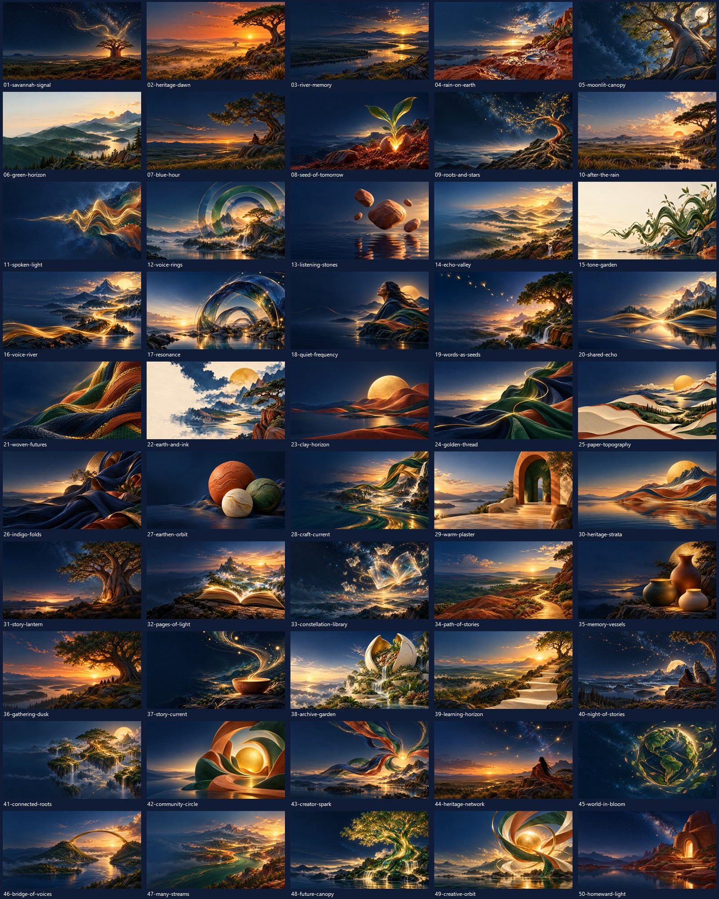

A new collection of 50 desktop wallpapers draws on the ideas behind Indigen World: keeping languages alive, sharing stories, learning together and creating for the future.

The collection moves through five themes: living landscapes; voice and listening; craft and materials; stories and memory; and connected communities. Navy, heritage green, terracotta, gold and cream connect the designs to the project's visual palette.
Choose a numbered PNG in the repository's assets/wallpapers/indigen-world-50 folder, then select it in your computer's desktop background settings. Use the contact sheet to browse the collection. The quiet areas leave space for desktop icons.
The files are approximately 16:9 at 1672 × 941 pixels. Larger screens will scale them up. The collection is prepared in the repository; a public download page, app integration and external publication are not confirmed.